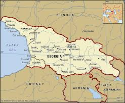
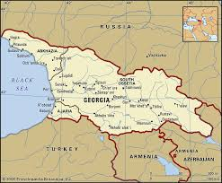
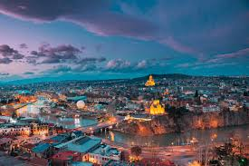
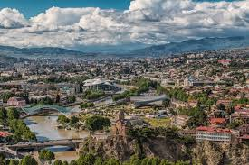

Tbilisi (/təbɪˈliːsi, təˈbɪlɪsi/ ⓘ tə-bil-EE-see, tə-BIL-iss-ee;[7] Georgian: თბილისი, pronounced [ˈtʰbilisi] ⓘ), in some languages still known by its pre-1936 name Tiflis[a] (/ˈtɪflɪs/ ⓘ TIF-liss),[7] (Georgian: ტფილისი, romanized: t'pilisi [tʼpʰilisi]) is the capital and largest city of Georgia, located on the banks of the Kura River. With around 1,330,217 inhabitants, it contains almost one third of the country's population.[8] Tbilisi was founded in the fifth century AD by Vakhtang I of Iberia and has since served as the capital of various Georgian kingdoms and republics. Between 1801 and 1917, then part of the Russian Empire, it was the seat of the Caucasus Viceroyalty, governing both the northern and the southern sides of the Caucasus.[9][10] Because of its location at the crossroads between Europe and Asia, and its proximity to the lucrative Silk Road, throughout history, Tbilisi has been a point of contention among various global powers. To this day, the city's location ensures its position as an important transit route for energy and trade projects. Tbilisi's history is reflected in its architecture, which is a mix of medieval, neoclassical, Beaux Arts, Art Nouveau, Stalinist, and Modern structures.
 